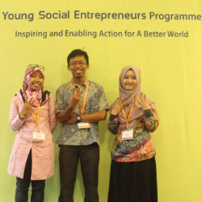
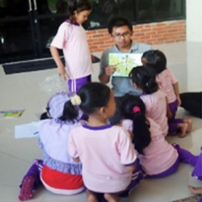

Previous Employment
YASPIDA SUKABUMI FOUNDATION FEB 2021 - PRESENT
IT STAFF
Employed in multimedia team as a staff IT. My role involves overseeing various responsibilities such as supervising website development progress, graphic design, and system analysts. I'm pleased to share that our efforts have been successful in enhancing the visibility of the term 'yaspida sukabumi' on the first page of Google search results.
PHOTON INFOTECH MAY 2018 - AUG 2018
SOFTWARE ENGINEER
Worked as software engineer, aaving contributed to the creation of various widgets and applications for the company, utilizing programming languages such as Java, JavaScript, and Swift.
I-CARE INDONESIA AUG 2016 - MAY 2017
SYSTEM ANALYST
I was engaged as a freelance system analyst for I-Care Indonesia, with the main objective of creating a comprehensive unified model language for a project. My role also encompassed the detailed specification of both the functional and non-functional requirements for an Android application. This involved defining the actions that the application needed to perform, as well as establishing the performance, security, and usability standards it was expected to meet.
Education
Institut Pertanian Bogor (IPB University)2015 - 2018
BACHELOR DEGREE
Bachelor degree (S.Komp) of Computer Science, graduated With Honors and GPA 3.20 of 4.00
Institut Pertanian Bogor (IPB University)2012 - 2015
ASSOCIATE DEGREE
Associate degree (A.Md) of Informatics Management, graduated With Honors and GPA 3.28 of 4.00
Technical Skills & Certificates
Editing
- AI (stable diffusion)
- inkscape
- CorelDraw
- Adobe Photoshop
- Adobe Illustrator
- Adobe Premiere
Development
- VS Code
- Sublime
- Source tree
- Android Studio
- R/Rstudio
- Pycharm/Anaconda
- Laravel framework
Languages
- HTML/CSS
- javascript
- PHP
- java
- C/C++/C#
- python
Duis egestas tortor metus, vitae venenatis tortor tristique at. Pellentesque dignissim purus vitae enim blandit, sed tristique enim malesuada. Maecenas dolor erat, volutpat a tellus eu, euismod iaculis urna. Nulla dui purus, viverra viverra dolor non, malesuada dictum purus.
Organization activity
FORCES IPB 2013 - 2016
SERVICE DIVISION
Forces IPB is student activity unit (UKM) for science studies at IPB university, served as service division with the responsibility to manage the website and as graphic designer.
MULTIMEDIA CLUB 2010 - 2012
GRAPHICS DESIGNER
Multimedia Club is student activity in highschool (SMAN 1 SUKARESMI), the club is responsible for documenting student activity. I was given the responsibility to make pamphlets/school banners, posters for school event, and editing video.
Community Development

WESURE 2015 - 2017
IT DIRECTOR
Wesure is eco-socio enterprise dedicated to addressing environmental issues through the development of an improved waste management system. I served as the IT Director and was assigned the task of creating a website, videos, and banners to effectively communicate and promote Wesure's programs to the public, ensuring that our mission and initiatives reached a broader audience.

ANWELF PUZZLE 2015
DESIGNER
Anwelf Puzzle is an initiative in the Student Creativity Week (PKM) program, designed to instill empathy in children by teaching the values of animal welfare. This educational concept is presented in an interesting puzzle format. I played a key role in this project by designing the puzzle.
© 2024 Shaugi Chasbullah, Curriculum Vitae All Rights Reseverd | Design by W3layouts